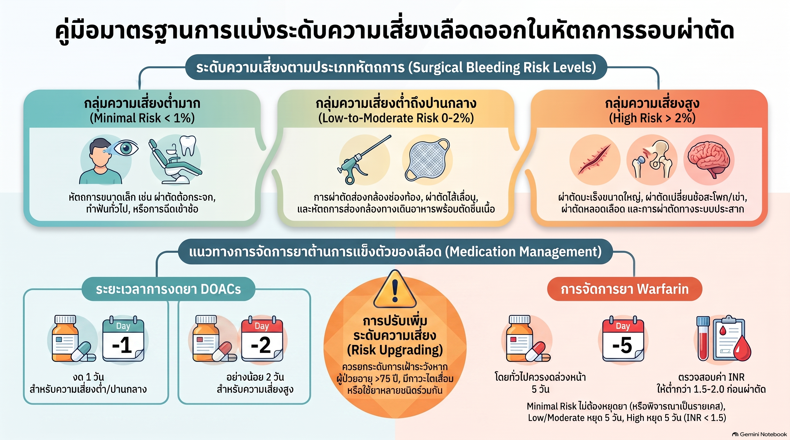

OPD Online
Checklist: อย่าลืมถามคนไข้!
ประเมินความเสี่ยง VTE (Caprini Score) คลิก!
1. ข้อมูลการผ่าตัด (Surgery Info)

Procedural Bleeding Risk
Minimal Risk
- Cataract
- Minor dental
- Minor excisions
Low/Moderate Risk
- Laparoscopic Chole.
- Hernia Repair
- Endoscopy + biopsy
High Risk
- Major Abdominal
- Major Ortho
- CABG
Critical Site
- Intracranial
- Spinal
- Posterior eye

2. ยาที่ผู้ป่วยใช้ (Current Meds)
3. ข้อมูลยาเพิ่มเติม
ข้อมูลเพิ่มเติม: RCRI Score

1. ข้อมูลการรับยาและประเภทอาการไม่พึงประสงค์ (ADR / Side Effect)
2. อาการไม่พึงประสงค์และการคัดกรองอาการรุนแรง (Reaction & Severity)
3. รายการยาที่เกี่ยวข้อง & ไทม์ไลน์เปรียบเทียบ (ADR Gantt Chart)
4. อัลกอริทึมประเมินความน่าจะเป็น (Causality Assessment)
เลือกเกณฑ์ขององค์การอนามัยโลก (WHO-UMC Causality Categories) ที่ตรงกับข้อมูลทางคลินิกของผู้ป่วยมากที่สุด:
5. การจัดการของเภสัชกรและสรุปผลประเมิน (Management & Plan)
เมนูจัดการคิว Warfarin
บันทึกสำเร็จ!
เลข Warfarin ของคนไข้รายนี้คือ:
กำลังโหลดข้อมูล...
ข้อมูลประเมินผู้ป่วย (Pharmacist Note)
เครื่องมือปรับขนาดยาวาร์ฟารินคู่กับไรแฟมปิน
ประเมิน Onset / Offset และคำนวณขนาดยาร่วมกับระดับค่า INR
ดูแนวทางการปรับยาและกลไกการเกิดอันตรกิริยา (คลิกเพื่อกางออก)
กลไกอันตรกิริยา (Mechanism of Action)
Rifampin
ยาปฏิชีวนะที่เป็น
Potent Enzyme Inducer
CYP450 (ตับ)
เหนี่ยวนำเอนไซม์
เร่งการทำงานให้เร็วขึ้น
Warfarin Clearance
ยาถูกกำจัดออกเร็วขึ้น
ค่า INR ลดลงอย่างรวดเร็ว
ไทม์ไลน์การปรับยา (Clinical Guideline)
ผลการประเมินและขนาดยา
การตรวจติดตามค่า INR
ตัวเลือกวิธีกินยาตามเป้าหมายการปรับขนาดยา (คลิกที่การ์ดเพื่อเลือก):
ปรับขนาดยาที่ต้องการ (เลื่อนเพื่อเลือก หรือพิมพ์ตัวเลข)
ตารางอ้างอิงการจัดการเมื่อค่า INR อยู่นอกเป้าหมาย (No bleeding) และข้อควรระวัง
| ระดับค่า INR | การหยุดยา | การให้ Vitamin K1 | การปรับขนาดยา |
|---|---|---|---|
| < 1.5 | - | - | เพิ่มขนาดยาขึ้น 10-20% ต่อสัปดาห์ |
| 1.5 - 1.9 | - | - | เพิ่มขนาดยาขึ้น 5-10% ต่อสัปดาห์ |
| 2.0 - 3.0 | - | - | คงขนาดยาเดิม |
| 3.1 - 3.9 | - | - | ลดขนาดยาลง 5-10% ต่อสัปดาห์ |
| 4.0 - 4.9 | หยุดยา 1 วัน | - | ลดขนาดยาลง 10-20% ต่อสัปดาห์ |
| 5.0 - 8.9 | หยุดยา 2-3 วัน | Vit K1 1 mg (กิน) | ลดขนาดยาลง 20% ต่อสัปดาห์ |
| > 9.0 | หยุดยา 5-7 วัน | Vit K1 5-10 mg (กิน) | ประเมินอย่างใกล้ชิด |
เป้าหมายการรักษา HFrEF: The Quadruple Therapy
การให้ยาหลักครบทั้ง 4 กลุ่ม ร่วมกันตั้งแต่แรก ลดอัตราการเสียชีวิต (All-cause mortality) ได้ถึง 73% แนะนำให้เริ่มยาให้ครบโดยเร็ว และปรับยา (Titration) ทุก 1-2 สัปดาห์จนถึง Target dose
1. ข้อมูลทางคลินิก (Clinical Parameters)
2. รายการยาที่ใช้อยู่ (Medication)
3. การให้ความรู้ผู้ป่วยและวัคซีน
รายงานและแผนการดูแล (Pharmacist Intervention Plan)
7. คลินิกโรคไตเรื้อรังและชะลอไตเสื่อม (CKD Clinic)
ติดตามแนวโน้มการทำงานของไต (sCr / eGFR), คัดกรอง DRP/Nephrotoxic/สมุนไพร และให้คำแนะนำชะลอไตเสื่อม
แนวทางให้ความรู้ผู้ป่วย CKD ที่ยังไม่ได้ล้างไต (Pre-dialysis Patient Education)
1. ยาและสิ่งที่ต้องหลีกเลี่ยงเด็ดขาด (Nephroprotection)
- งดยาแก้ปวดกลุ่ม NSAIDs / COX-2 เด็ดขาด: เช่น Ibuprofen, Naproxen, Diclofenac, Mefenamic acid (Ponstan), Piroxicam, Celecoxib, Etoricoxib รวมถึงยาชุดแก้ปวดเมื่อย/ยาลูกกลอน (หากปวดให้ใช้ Paracetamol เท่าที่จำเป็น)
- งดสมุนไพรและอาหารเสริมทุกชนิด: ยาต้ม, ยาหม้อ, ถั่งเช่า, เห็ดหลินจือ, ชาชงลูกใต้ใบ, น้ำกระท่อม, ผงผักสกัด, คอลลาเจน/โปรตีนชงไม่ทราบแหล่งที่มา
- แจ้งทุกครั้งว่าเป็นโรคไต (ระบุ Stage/eGFR): เมื่อไปคลินิก ร้านยา รพ.อื่น ทำฟัน หรือต้องฉีดสีทึบรังสี
2. เทคนิคการใช้ยาโรคไต & Sick Day Rules
- ยาจับฟอสเฟต (CaCO3 / Calcium acetate): ต้องทานพร้อมอาหารคำแรก (หรือเคี้ยวพร้อมอาหาร) เพื่อจับฟอสฟอรัสในอาหาร (หากทานเพื่อเสริมแคลเซียมให้ทานหลังอาหาร)
- Sodamint (Sodium bicarbonate): ทานสม่ำเสมอเพื่อลดภาวะเลือดเป็นกรด ช่วยชะลอความเสื่อมของไต
- ธาตุเหล็ก (Ferrous): ทานห่างจากแคลเซียม (CaCO3) หรือยาลดกรดอย่างน้อย 2 ชั่วโมง
- Sick Day Rules (เมื่อท้องเสีย/อาเจียน/ขาดน้ำ/ไข้สูงกินไม่ได้): ให้หยุดยาขับปัสสาวะ (Furosemide), SGLT2i (Empa/Dapa), Metformin, ACEi/ARB ชั่วคราว และรีบมาพบแพทย์เพื่อป้องกันไตวายเฉียบพลัน (AKI)
3. การคุมเค็ม (Sodium) และโปรตีน
- จำกัดโซเดียม < 2,000 mg/วัน: เกลือไม่เกิน 1 ช้อนชา/วัน หรือน้ำปลา/ซีอิ๊วไม่เกิน 3-4 ช้อนชา/วัน
- เลี่ยงอาหารแฝงโซเดียมสูง: งดซดน้ำซุป/น้ำแกง/น้ำจิ้มชาบู, เลี่ยงอาหารแปรรูป (ไส้กรอก หมูยอ แหนม บะหมี่กึ่งสำเร็จรูป ปลากระป๋อง ของดอง ขนมกรุบกรอบที่มีผงฟู)
- ห้ามใช้เกลือเทียม/น้ำปลาลดโซเดียม (Low-sodium condiments): ในผู้ป่วย CKD Stage 3b-5 เพราะใช้เกลือโพแทสเซียมแทน เสี่ยงหัวใจเต้นผิดจังหวะ
- โปรตีน (Stage 3-5 ก่อนล้างไต): ทานโปรตีนคุณภาพดีในปริมาณจำกัด (0.6-0.8 g/kg/วัน) เช่น เนื้อปลา ไข่ขาว เพื่อลดของเสีย BUN คั่ง
4. โพแทสเซียม (K+), ฟอสฟอรัส (PO4) & อาการเตือน
- เมื่อ K+ สูง (> 5.0) หรือ Stage 4-5: เลี่ยงผลไม้ K+ สูง (ทุเรียน กล้วย ส้ม มะละกอสุก ขนุน มะม่วงสุก แก้วมังกร น้ำผลไม้ ผลไม้อบแห้ง) และผักสีเข้ม/หัวใต้ดิน (บล็อกโคลี แครอท มันฝรั่ง มะเขือเทศ) เลือกทานชมพู่ แอปเปิ้ลเขียว องุ่นเขียว สับปะรด (ลวกผักเทน้ำทิ้งก่อนปรุง)
- เมื่อฟอสฟอรัสสูง (Stage 3b-5): เลี่ยงนมวัว ชีส ไข่แดง เครื่องในสัตว์ ถั่วเมล็ดแห้ง เมล็ดพืช น้ำอัดลมสีเข้ม กาแฟใส่นมข้น/ครีมเทียม เบเกอรี่
- อาการเตือนที่ต้องรีบมา รพ.: ขา/หน้าบวมมาก นอนราบไม่ได้ หอบเหนื่อย ปัสสาวะออกน้อยลงชัดเจน คลื่นไส้อาเจียนซึมสับสน หรือใจสั่นอ่อนแรง
1. ข้อมูลการทำงานของไตเปรียบเทียบ (เชื่อมคอลัมน์ D ถึง I ใน Google Sheet)
2. ซักประวัติปัญหาการใช้ยาในคลินิกไต (เชื่อมคอลัมน์ J: DRP)
8. คลินิกโรคระบบทางเดินหายใจ (Asthma / COPD Clinic)
ประเมินเทคนิคการใช้ยาพ่น การควบคุมอาการโรคหืด/ปอดอุดกั้นเรื้อรัง และการเกิดผลข้างเคียงจากสเตียรอยด์พ่น